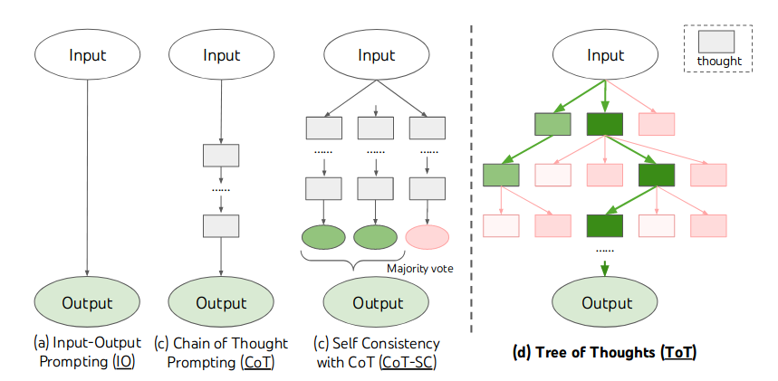
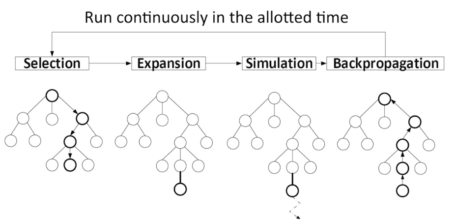

LLMs playing games
Can LLMs plan and reason?
This page is alive i.e, I’ll be adding new visualizations (new LLM, Game, Planning approach etc.).
Abstract/TLDR
We explored the design space of LLM agents to improve the agent planning capabilities and our initial results show that for In-context based approaches MCTS is a good prior to encode into the prompts and In-weight approaches still outperform in-context approaches.
We hope to continue with the experiments and refine the in-context MCTS further.
Code for In-context techniques github and In-weight experiments github.
Introduction
In-context learning and instruction following capabilities of LLMs combined with their large world knowledge make them great at solving system 1(Kahneman 2011) tasks. The next obvious question would be to evaluate their performance in tasks that require deliberate thinking and planning i.e. system 2(Kahneman 2011) tasks.
Evaluation
Recent works try to evaluate system 2 capabilites of LLMs through
- Planning to solve tasks in interactive text-world environments
- ALFWorld (Shridhar et al. 2020).
- Web-Shop (Yao et al. 2022).
- Fact Checking tasks
- FEVER (Thorne et al. 2018)
- Question Answering tasks
- HotPotQA (Yang et al. 2018)
The issue with these evaluations is that an LLM with prior knowledge of facts can easily solve the tasks without deliberate thinking and planning.
In their new work (Duan et al. 2024) Propose to evaluate deliberate thinking through game-theoretic tasks.
“the extensive background and intricate details involved in role-play-based games dilute the pureness of logic and strategic reasoning that is typically found in game theoretic tasks”
They Propose GTBench a collection of 11 games and suggest evaluating LLM capabilities through LLM vs LLM or LLM vs Classical Agent games.

We use GTBench to evaluate the Planning capabilities of LLMs.
Architectural choices involved in LLM Based Agent design

Task Decomposition
Almost all of the approaches use this technique. As the name says the prompts are designed to prompt the LLM to decompose the given task into subtasks and then tackle them.
ReAct, a prominent decomposition-based approach, provides in-context examples decomposing a couple of tasks, and expects the LLM would solve the problem similarly.
Multi-Plan Selection
Query the LLM multiple times to generate (unique) plans (use low temperature). and select one of the plans using the LLM itself or an external critique.
External-Planner aided planning
These approaches usually query the LLM with problem definition to generate problem PDDL (Planning Domain Definition Language) file assuming problem domain file is already present and use external planners like Downward to generate the plan.
Newer approaches also try generating domain files through LLM.
Reflection and Refinement
Use an external critic or the LLM itself to critic the generated plan and query the LLM to improve the plan according to the critique.
Memory Aided Planning
There are diverse approaches that use external memory, some use it to store experiences and then retrieve relevant experiences during Test time similar to RAG. Some try to do full Reinforcement Learning by storing states and action values in memory.
In-Context Methods
Our-Approach

The progression of prompting techniques for planning, i.e.
Prompt -> CoT (Chain of Thought)-> ToT (Tree of Thought)
can be seen as an effort to encode the planning prior into the LLM prompts.

A very strong planning technique that works well with deep learning is Monte Carlo Tree Search (MCTS).
We try to encode MCTS planning prior into the LLM prompts. We do this by designing prompts for
- Selection
- Expansion and Simulation
- BackPropagation or Learning
We also initialize an in-context knowledge that is empty at the start and LLM stores its learning into this memory during the course of the game. We call this In-context MCTS.
In-Context MCTS
\[ \begin{array}{rlr} A_t &= \text{Selection}(P_s, \theta, K_t, S_t) \\ A_{opp} &= \text{Expansion}(P_e, \theta, K, S_t + A_t) \\ K_{t+1} &= \text{BackProp}(P_t, \theta, K, S_t+A_t+A'_{opp}+A_{opp}) \end{array} \]
Results
| NRA | Prompt-GPT4 Agent | CoT-GPT4 Agent | ToT-GPT4 Agent | IC-MCTS Agent |
|---|---|---|---|---|
| VS MCTS | -0.66 | -0.3 | -0.5 | -0.75 |
| VS Rand-Agent | 0.5 | 0.5454 | 0.25 | 0.3 |
Progression of In-Context Knowledge during a game.
- At the Start of the Game
“”
- After Opponent Makes Fist Move.
The opponent’s move <C2R2> indicates a strategy of controlling the center of the grid, which is a common tactic in Tic Tac Toe as it provides the most opportunities for creating a winning line. This move also suggests that the opponent is willing to take risks, as they chose not to block my potential winning line. This knowledge, combined with the previously gained understanding of the opponent’s dynamic strategy and their focus on creating their own winning lines, suggests that the opponent is a risk-taking, offensive player. This knowledge can be used to anticipate the opponent’s moves and adjust my strategy accordingly, focusing on both blocking their potential winning lines and creating my own.
- After Losing the game to the Opponent.
The opponent’s move <C2R3> shows a strategic shift towards controlling the corners and edges of the grid. This move indicates that the opponent is not only focused on blocking my potential winning lines but also on creating their own. The opponent’s strategy seems to be dynamic, adapting based on the game’s progression. This knowledge, combined with the previously gained understanding, suggests that the opponent is a risk-taker who can change their strategy as needed. This knowledge can be used to anticipate the opponent’s moves and adjust my strategy accordingly. It is crucial to not only focus on blocking the opponent’s potential winning lines but also on creating my own. Additionally, it is important to consider the corners and edges of the grid as potential winning lines, as the opponent has shown a tendency to control these areas.
Conclusion (In-Context)
- Prompting performance often does not transfer across LLMs.
- Knowledge in IC-MCTS becomes opponent specific. Memory needs to be persistent across multiple games and multiple opponents to learn a generic/useful strategy.
- Computationally expensive at test time.
- Current approaches are fragile and break easily.
In-Weight Methods
Our-Approach
RLHF finetuning for strategic reasoning
A traditional RLHF pipeline has the following steps
- Gather preference data
- Train a reward model
- Use feedback from the reward model to train the LLM using PPO

We adapt this pipeline for training LLM agents to play strategic games. Instead of gathering preference data and then training a reward model, we directly train a Deep Q Network model using self play. This Deep Q Network model will then be used to provide reward values for responses from the LLM.
The whole pipeline is as shown below:
- Train DQN using self-play to play games from the Open Spiel framework
- Evaluate the DQN against random agent and another DQN agent and store it in state buffer
- Generate rewards for state, action pairs in the replay buffer
- Generate prompts for each state, prompt LLM to get it’s response. Extract action using regex
- Use reward from the DQN as feedback, train the LLM using PPO
The above steps can be repeated for multiple games and a multi-game dataset of state/action pairs along with their rewards can be created. In particular we generate a five game dataset which includes data from the games Tic-Tac-Toe, Kuhn’s Poker, Nim, Liar’s dice, and Pig. The reason we restrict ourselves to these games is that they have an easy structure which makes it relatively simpler to engineer prompts and regexes for them.

Results
| Normalized Relative Advantage | RLHF LLAMA2 (only ticatac toe data) | RLHF LLAMA2 (Multi-Game Data) |
|---|---|---|
| VS LLAMA2 | 0.18 | 0.16 |
Conclusion (In-weight Methods)
- Limited generalization across games, however can help if games are similar
- Expensive and time consuming need to finetune large number of parameters at train time
- Lightweight at inference time
- Not possible for closed source LLMs
Appendix
Visualizations
Here are some visualizations of LLMs playing against classical AI agents.
- 7B parameter LLMs are not great at the tasks as can be seen from the visualizations.
- I’ll soon upload the visualizations for larger LLMs.
Tic-Tac-Toe, Propmt-based Agents
- Game: Tic-Tac-Toe
- LLMs: LLAMA2 7B, MISTRAL 7B
- Agent Design: Propmt based, i.e, game instructions and current state are given in the input prompt to the LLM.
- Reasoning Module: None/LLM itself.
The Player using 🟥 Is the LLM Agent
The Player using 🟦 Is Monte Carlo Tree Search.


Tic-Tac-Toe, Chain-of-Though Prompt based Agents
llama2_7b
- Topmost paragraph is the system prompt.
- Second paragraph is the user prompt.
- LLM response is the last paragraph.